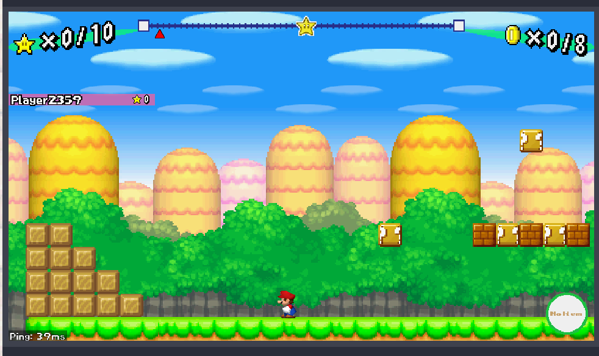
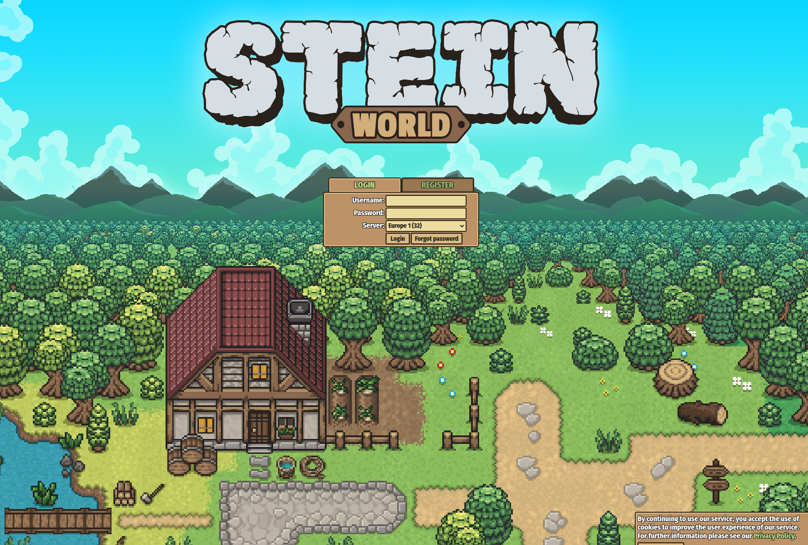

<!doctype html>
<html class="theme-5">
<meta charset="utf-8" />
<link href="../html-slideshow.bundle.min.css" rel="stylesheet" />
<link href="../style.css" rel="stylesheet" />
<script src="https://dbwebb.se/cdn/js/html-slideshow_v1.1.0.bundle.min.js"></script>

<title>Real-time web</title>

<script data-role="slide" type="text/html" data-markdown class="titlepage center">
# Real-time web
## Make it faster
### Mikael Roos
</script>


<script data-role="slide" type="text/html" data-markdown>
# Agenda

* Real-time and real-time web
* Application areas for the web
* API's and technologies

</script>


<script data-role="slide" type="text/html" data-markdown class="titlepage center">
# Real-time computing
</script>


<script data-role="slide" type="text/html" data-markdown>
# Real-time computing

> Real-time computing is the computer science term for hardware and software systems subject to a "real-time constraint", for example from event to system response."

> "Real-time programs must guarantee response within specified time constraints, often referred to as 'deadlines'."

> "Real-time responses are often understood to be in the order of milliseconds, and sometimes microseconds."

<p class="footnote">https://en.wikipedia.org/wiki/Real-time_computing</p>

</script>


<script data-role="slide" type="text/html" data-markdown>
# Real-time criteria

* **Hard** - missing a deadline is a total system failure
* **Firm** - infrequent deadline misses are tolerable, but may degrade the system's quality of service. The usefulness of a result is zero after its deadline.
* __Soft__ - the usefulness of a result degrades after its deadline, thereby degrading the system's quality of service.

</script>


<script data-role="slide" type="text/html" data-markdown>
# Real-time examples

* Car or plane
* Pacemaker
* Printer, modem
* Industrial production lines
* Digital signal processing
    * Incoming queue must no grow

</script>


<script data-role="slide" type="text/html" data-markdown>
# Real-time almost

* Live versus real-time
    * (delay 6-20 ms, for example lipsync)
* Telecommunication
    * (300 ms to avoid talk-over)
* Real-time and high-performance
    * (not the same)
* Near real-time
    * (defined for the situation at hand)

</script>


<script data-role="slide" type="text/html" data-markdown class="titlepage center">
# Real-time web
</script>


<script data-role="slide" type="text/html" data-markdown>
# Beginning

* HTTP 1.1
* Request, Response over tcp
* XMLHTTPRequest (ajax)
* How to make the web faster?
    * Near real-time
    * Limited response times
    * Streaming
    * Server initiated updates

</script>


<script data-role="slide" type="text/html" data-markdown>
# Use cases

* Chat, social networks
* Video conference
* Watch streaming video/audio
* Stock exchange
* Multi-user games
* Pair programming & document writing
* Instant updates

</script>


<script data-role="slide" type="text/html" data-markdown>
# Really real-time?

Compare web to real-time.

* Soft - the usefulness of a result degrades after its deadline, thereby degrading the system's quality of service.
    * For many cases
* Near real-time (defined for the situation at hand)

</script>


<script data-role="slide" type="text/html" data-markdown class="titlepage center">
# Examples
## Real-time web application areas
</script>


<script data-role="slide" type="text/html" data-markdown>
# Social networks

* Facebook
* Twitter

</script>


<script data-role="slide" type="text/html" data-markdown>
# Community

* Slack
* Discord

</script>


<script data-role="slide" type="text/html" data-markdown>
# Streaming

* YouTube
* Twitch

</script>


<script data-role="slide" type="text/html" data-markdown>
# Streaming p2p

* Zoom
* Facebook messenger
* Google hangouts

</script>


<script data-role="slide" type="text/html" data-markdown>
# Gaming

* Multi-player Super Mario
* Adventure games
* MMORPG
* WebGL

</script>


<script data-role="slide" type="text/html" data-markdown class="center">
<figure>

<figcaption>Super Mario as a multiplayer online game.</figcaption>
</figure>
</script>


<script data-role="slide" type="text/html" data-markdown class="center">
<figure>

<figcaption>Stein multi-player adventure game.</figcaption>
</figure>
</script>


<script data-role="slide" type="text/html" data-markdown class="center">
<figure>

<figcaption>Dragon awaken, example of MMORPG.</figcaption>
</figure>
</script>


<script data-role="slide" type="text/html" data-markdown>
# Cooperation

* Google docs
* Codeshare

</script>


<script data-role="slide" type="text/html" data-markdown class="titlepage center">
# Techniques
</script>


<script data-role="slide" type="text/html" data-markdown>
# XMLHTTPRequest

* Asynchronous requests over HTTP
* Ajax
    * Long polling (simulate server initiated)
* Fetch

<p class="footnote">https://developer.mozilla.org/en-US/docs/Web/API/XMLHttpRequest</p>

</script>


<script data-role="slide" type="text/html" data-markdown>
# Websockets

* Bidirectional socket communication
* Client or server can initiate communication
* Build own application layer protocol
* Upgrade HTTP protocol to socket communication
* WebTransport API is a coming update to Websockets and HTTP3

<p class="footnote">https://developer.mozilla.org/en-US/docs/Web/API/WebSockets_API</p>

</script>


<script data-role="slide" type="text/html" data-markdown>
# Server-sent events

* Send messages from server to browser
* Browser receives messages as events
* Web workers listen to the server

<p class="footnote">https://developer.mozilla.org/en-US/docs/Web/API/Server-sent_events<br>https://developer.mozilla.org/en-US/docs/Web/API/Web_Workers_API</p>

</script>


<script data-role="slide" type="text/html" data-markdown>
# Webhook

> "Something happened, please notify me"

* Server side
* Listen to external events by exposing a webhook
* Ordinary route dealing with incoming request
* Authentication by key
* (Perhaps deliver messages through the Server-sent events and the Push API)

<p class="footnote">https://en.wikipedia.org/wiki/Webhook<br>https://developer.mozilla.org/en-US/docs/Web/API/Push_API</p>

</script>


<script data-role="slide" type="text/html" data-markdown>
# Notifications

> "Something happened, please notify me"

* Client side
* Notifications API
* Push API

> A push API is used when messages have to be 'pushed' from the server from which the application runs. Notification APIs deal with only notifications.

<p class="footnote">https://developer.mozilla.org/en-US/docs/Web/API/Notifications_API<br>https://developer.mozilla.org/en-US/docs/Web/API/Push_API</p>

</script>


<script data-role="slide" type="text/html" data-markdown>
# WebRTC

* WebRTC API (Web Real-Time Communication)
* Enables apps to capture and stream audio/video/data
* Between browsers without requiring an intermediary
* Teleconferencing peer-to-peer
    * Without plug-ins or third-party software

<p class="footnote">https://developer.mozilla.org/en-US/docs/Web/API/WebRTC_API</p>

</script>


<script data-role="slide" type="text/html" data-markdown>
# WebXR Device API

* Augumented and virtual reality (XR - AR/VR) to the web
* Access to the input and output capabilities of AR and VR-enabled devices
* Render 3D scenery in the VR and AR supported devices

<p class="footnote">https://developer.mozilla.org/en-US/docs/Web/API/WebXR_Device_API</p>

</script>


<script data-role="slide" type="text/html" data-markdown>
# Conclusion

* Many application areas provide near real-time applications for the web
* Web API's provide the way to implement them
* Web is a platform that can do (near) real-time

</script>


<script data-role="slide" type="text/html" data-markdown>
# Summary

* Real-time and real-time web
* Application areas for the web
* API's and technologies

</script>


<script data-role="slide" type="text/html" data-markdown class="titlepage center">
# The end
</script>


<script data-role="slide" type="text/html" data-markdown>
</script>

</html>
